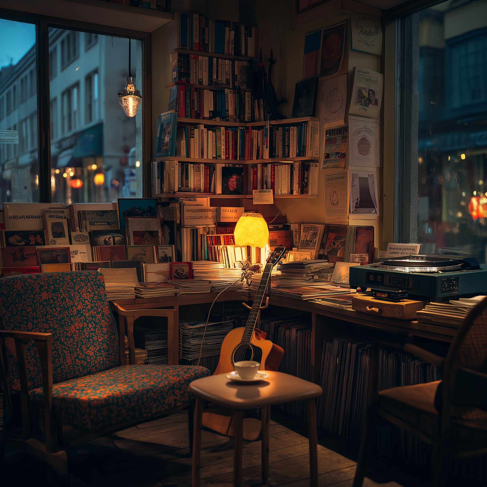

space-between.art
這裡是一間安靜的書店。
放著一些能修復你的故事。
你不需要買什麼。
你只需要坐下來，翻開一頁。
— 隙光文學 · 老靈魂的獨立書店

回答三個問題，讓我們幫你嚐一嚐。
每一種味道都有一個故事等著你。
沈若在渡口區開了一間只有六張桌子的小餐館。她能嚐到每個客人的情緒——鹹是悲傷，苦是恐懼，辣是憤怒，酸是焦慮。三年來從來沒有失手。直到一個失去味覺的男人走進來。
閱讀全 18 集 + 番外 →有些人天生能看見光。光是情緒的殘留物——依附在人身上，有些是溫暖的金色，有些是吞噬一切的黑洞。藥師的工作是調配處方，修復快要熄滅的光。
「每個人都住在自己蓋的房子裡，而我的工作是幫他們改建。」S 市永遠在下雨，有一座修不好的斷橋，還有一間沒有招牌的事務所。
梧桐街 47 號，二十年來只有一個住戶。社區稱它為「悲傷之屋」。六位心理學專家各持不同學派，共同面對一個鎖了二十年的房間。
不是教你做什麼。是陪你慢慢成為一個你自己也認得出來的樣子。序章 + 第一章免費試讀。
一個在櫃檯後面沖茶，會跟你聊天。
另一個在角落看書，偶爾抬頭問你一句。
24 小時。不評判。慢慢嚟。
療癒哲學、創作手記、生活裡的安靜觀察。
不趕時間的時候，坐下來讀。
日本金繕的核心不是「修好」——而是承認破碎已經發生，然後用金線讓裂縫成為新的美。
六張桌子是一個隱喻——你能好好對待的人，永遠是有限的。
凌晨三點的世界很安靜。安靜到你終於聽見自己一直在說的那句話。
在拾味小館番外篇《純淨之夜》中，沈若第一次不做菜——只泡茶。三杯處方茶對應三種情緒。
來自加拿大的 METZ Luxury Tea 將故事裡的茶香帶到現實。金字塔茶包裡的整葉茶在熱水中緩緩舒展，就像一個人終於願意說出心事的樣子。
隙光是一間老靈魂的獨立書店。
門口沒有招牌。推開門會聞到一點木頭和紙的味道。
書架上放著六部原創療癒小說，
橫跨味覺寓言、都市奇幻、心理懸疑。
角落有兩個人——一個跟你聊天，一個問你問題。
桌上有一本翻開的專欄，寫著一些安靜的觀察。
你不一定要買什麼。
你只需要坐下來。
走的時候如果肩膀鬆了一點，那就夠了。